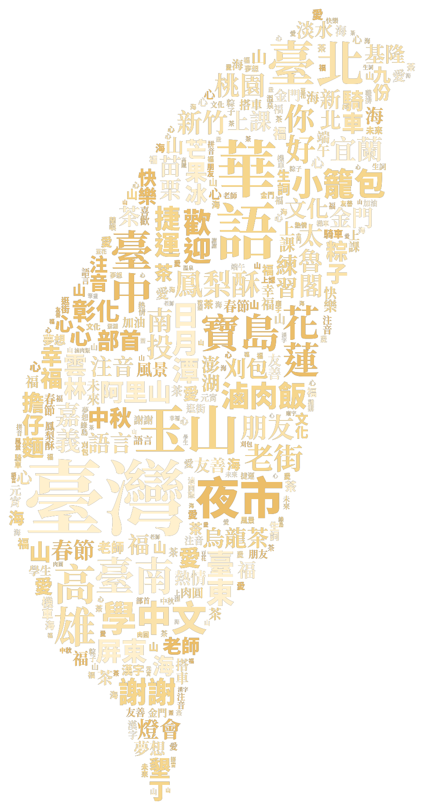

AI 老師
部首 泡泡圖
XIN-YA Mandarin
✕
👁
TAIWAN TOCFL

📘 Band A · 1,226
📗 Band B · 3,509
部首 · 214
🔥
0
★
0
🏮
›
🧧
🏮
📋
🃏
📝
部
💬
📅
Band A
![]() XIN-YA Mandarin
XIN-YA Mandarin